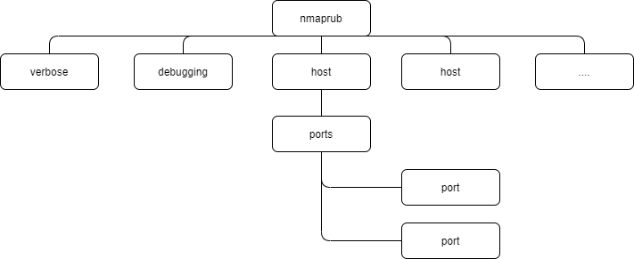
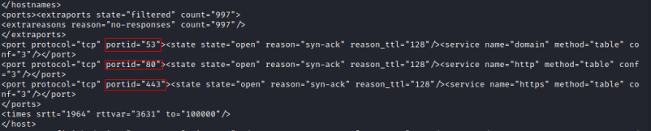

xml format
1. Run nmap
nmap -sS -n 192.168.1.97 -oX openPorts.xml
cat openPorts
Tree structure of the xml output file (-oX)
 We are interested into the following path type: host -> ports -> port -> portid
 2.Extract Ip addresses with Ruby script
./openPorts-xml.rb 192.168.1.97 openPorts.xml
DESCRIPTION
openPorts-xml.rb #!/usr/bin/ruby
require "rexml/document"
begin
ip = ARGV[0]
# chek if the optional argument 'state' is provided
port_state = ARGV[1][1..-1] if ["-open","-closed","-filtered"].include? ARGV[1]
# otherwise set "open" as default state
port_state = "open" if !port_state
# checks if argument is the file
file = ARGV[2] if ARGV[2]
file = ARGV[1] if !file
# parses the xml file to create a tree
doc = REXML::Document.new File.new(file)
# XPath syntax to extract only the desired ports
pattern = "//host[address/@addr='#{ip}']//port[state/@state='#{port_state}']"
# for each address node child of host node
# puts to stdout the addr attribute
doc.elements.each(pattern) do |port|
puts port.attributes["portid"]
end
rescue Exception => e
puts e
end